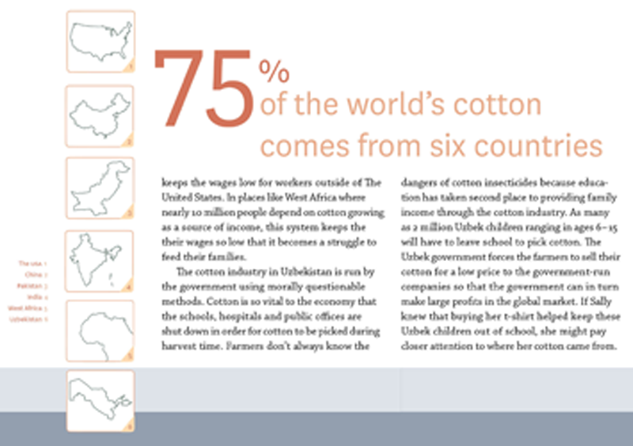

Sally's T-Shirt
This is a project that seeks to educate middle school children about the environmental and social impact of cotton production. The project was done in two parts: a pamphlet and a video. I wrote and illustrated all of the content. Each page is 8"x5"; bound using a single signature pamphlet stitch; designed in Adobe InDesign and Adobe Illustrator. I made a stop-motion animation using cut outs that I hand illustrated, and then translated into Adobe Illustrator. The video was edited in iMovie.